Sono Giunta Daniele e sono nato il 25 aprile 2007, proprio all'anniversario della liberazione d'Italia. Vivo a Terni, una piccola provincia nel centro Italia, e sto facendo il 5° anno dell'ITT, una scuola tecnica. Sin da piccolo ero interessato alle materie STEM: scienza, tecnologia, ingegneria, e matematica. Ho partecipato in competizioni matematiche a partire dalla scuola media, ottenendo sempre buoni risultati. Sono arrivato primo alle Olimpiadi di Informatica nella mia regione e ho partecipato alle loro finali nazionali.
Conosco molto bene il linguaggio di programmazione Python e sono in grado di creare una pagina web e di sviluppare videogiochi. Ho anche lavorato con altri linguaggi di programmazione come Lua e Arduino. Ho la certificazione PET con Grado A, la certificazione FCE con Grado B, e la certificazione ICDL Full Standard.
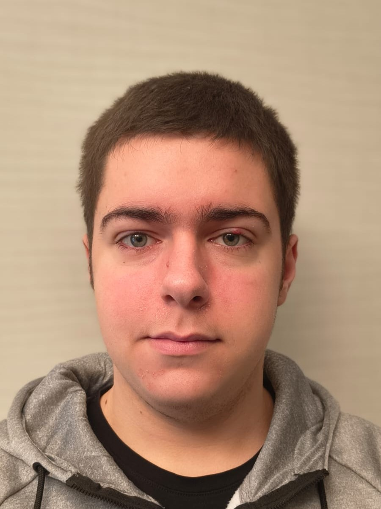
Dal 13 al 24 gennaio, ho svolto la mia attività di FSL presso Netaddiction, una Società a responsabilità limitata fondata nel 1999 per opera di Andrea Pucci. E' stata personalmente un'esperienza nuova, ma anche una molto formativa che desidero pienamente fare in futuro.
Netaddiction (Sito, Facebook, e Linkedin) è una Società a responsabilità limitata fondata nel 1999 per opera di Andrea Pucci.
Quest'azienda si occupa principalmente dello sviluppo e gestione di contenuti web e del marketing. Partendo da un sito specializzato sui videogiochi Multiplayer.it, essa si ampliò acquisendo altre realtà editoriali come Movieplayer.it per il cinema e Dissapore.com per il cibo e la critica enogastronomica. Oggi Netaddiction possiede anche Galaxy Network, una business unit dedicata agli annunci digitali per piccole e medie imprese.
L'Amministratore Unico e Fondatore dell'azienda è Andrea Pucci. I vari responsabili di ogni settore sono:
In particolare, Daniele Minciaroni è stato il mio Tutor Aziendale.
Insieme a Daniele Minciaroni ed Andrea De Angelis, ho svolto varie attività in campo informatico sia da solo che in gruppo con il mio compagno Albanese Manuel. In questi giorni ho lavorato sulla gestione e organizzazione di database, ho imparato vari strumenti in campo informatico, e ho sviluppato la logica di siti web, ossia la parte back-end.
Un paradigma su cui ci siamo soffermati è quello dei database e del linguaggio di query SQL, prendendo MySQL come riferimento. Utilizzando i nostri computer personali, ho imparato ad organizzare un database e saper leggere e modificare velocemente i dati in esso contenuti, sia da riga di comando WSL che in modo programmatico con Python. Un altro aspetto in cui abbiamo lavorato molto è lo sviluppo di siti web attraverso backend Flask o Django, vedendo in particolare come integrarci un database SQL e sviluppare un'interfaccia utente dal punto di vista logico.
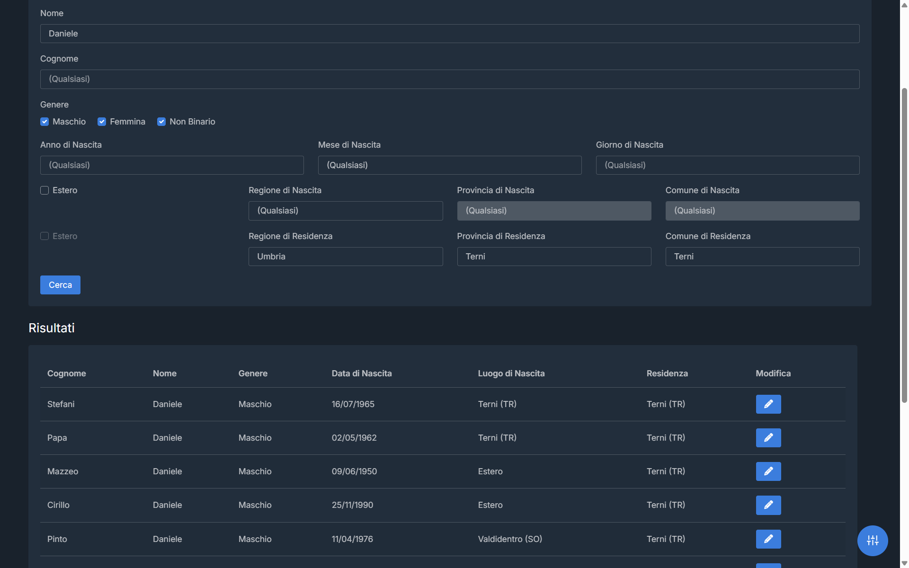
Grazie allo Stage ho imparato a lavorare professionalmente in gruppo e quali mezzi e strumenti vengono utilizzati per farlo. Ho sfruttato quest'opportunità anche per testare le mie abilità di organizzazione e gestione del tempo, e in particolare quelle di problem solving cercando insieme una soluzione talvolta anche con l'ausilio di Internet.
Prima dello Stage avevo solo poche paure o timori su quest'attività, e oggi sono fiero di aver svolto quest'esperienza. Ho svolto quest'attività con impegno, intraprendenza, e curiosità, dando sempre il meglio di me stesso e chiedendo informazioni quando necessario. Il personale aziendale è sempre stato gentile e disponibile e i tutor mi sono sempre stati di grande aiuto. Ho sviluppato le mie competenze sia trasversali e tecniche, ho scoperto nuovi strumenti nel campo informatico e ne ho approfonditi altrettanti.
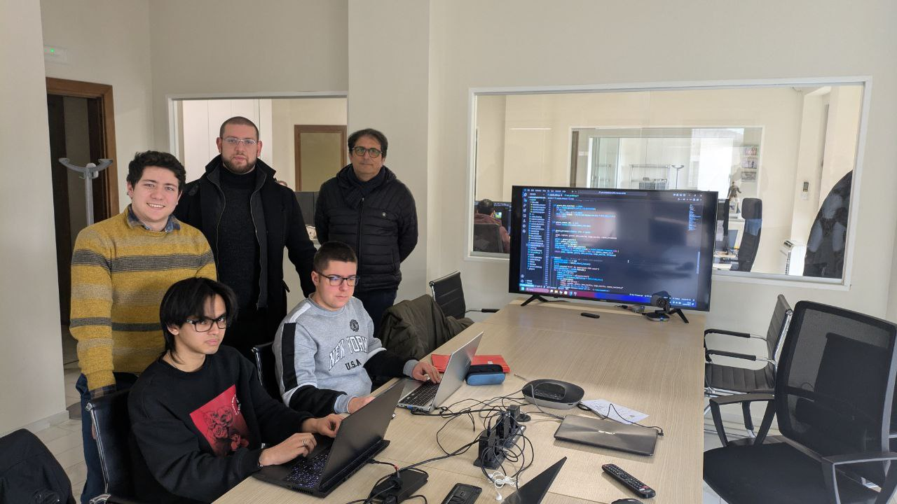
Ho svolto la mia attività di FSL del quinto anno, dal 15 al 27 settembre, sempre presso Netaddiction. Anche quest'esperienza è stata molto formativa per capire il lavoro di gruppo ed utilizzare tecnologie nuove.
Questo stage lo ho sempre svolto principalmente con Andrea De Angelis, ma questa volta ho avuto come compagni Matteucci Alessio e Galeano Giorgio. In questi giorni ho lavorato in una prima parte alla gestione ed utilizzo locale di modelli di IA ed agenti, ed in una seconda alle prime fasi di una startup per un utilizzo pratico di intelligenza artificiale, oltre ad imparare altri strumenti informatici.
Nella prima settimana abbiamo autonomamente fatto delle prove con modelli LLM scaricati da HuggingFace. Dopo aver capito le basi, ognuno di noi ha utilizzato Python per sperimentare con essi e costruire qualcosa di più complesso. Io ad esempio ho sviluppato un agente in grado di utilizzare strumenti come motori di ricerca, esecuzione di comandi tramite SSH, lettura e scrittura di mail per eseguire compiti complessi.
Nella seconda settimana ci siamo invece organizzati per svolgere un lavoro di gruppo insieme ai miei compagni. Con una sessione iniziale di brainstorming, abbiamo provato a cercare per la nostra startup possibili utilizzi di IA nel mercato. Alla fine, siamo andati con l'idea di un agente con il compito di scrivere una documentazione dei servizi presenti in un server web, ricavando informazioni scrivendo comandi su riga di comando. Sullo sviluppo del prototipo non sono riuscito a partecipare molto perché sono andato a Udine per le Olimpiadi di Informatica.
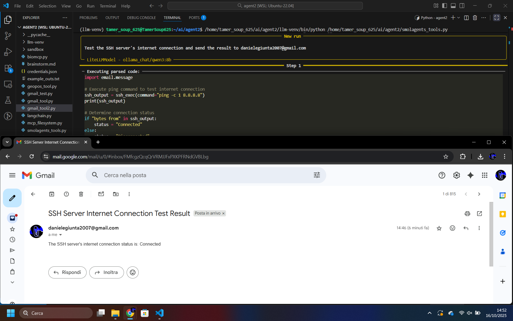
Grazie a questo Stage ho ampliato le mie conoscenze e appreso nella pratica come si sviluppa un progetto professionalmente. Ho sfruttato quest'opportunità anche per fare nuove amicizie, oltre a potenziare le abilità già sviluppate nello stage precedente.
Avevo già presente come funzionava lo Stage dall'anno scorso e quindi non avevo timori, e sono orgoglioso di aver portato a termine anche quest'esperienza. Ho affrontato ogni attività con dedizione, spirito d'iniziativa, e curiosità, cercando sempre di dare il massimo e chiedendo chiarimenti quando ne avevo bisogno. Il personale dell'azienda si è dimostrato sempre cortese e disponibile, e i tutor mi hanno offerto un supporto costante e prezioso. Durante questo percorso ho potuto ampliare sia le soft che le hard skills, scoprendo nuovi strumenti e approfondendone altri già conosciuti.
Un grazie a:
Durante l'anno scolastico 2024/25, ho partecipato a Supernova, un contest che svolge la nostra scuola sullo sviluppo di un progetto. E' stata un'esperienza nuova, ma il risultato è qualcosa di cui sono fiero e che desidero continuare a sviluppare in futuro.
Supernova è un contest di idee gestito dal mio istituto ITT Terni "Allievi-Sangallo".
In questo contest vari studenti di indirizzi diversi e professori sono raggruppati in team con lo scopo iniziale di presentare un progetto innovativo. I progetti migliori ricevono dei finanziamenti dalla Fondazione CARIT per essere sviluppati ed esposti a concorsi esterni, con lo scopo di valorizzare i progetti interdisciplinari. Nel quarto anno ho deciso di partecipare anch'io a questo progetto come esperienza formativa.
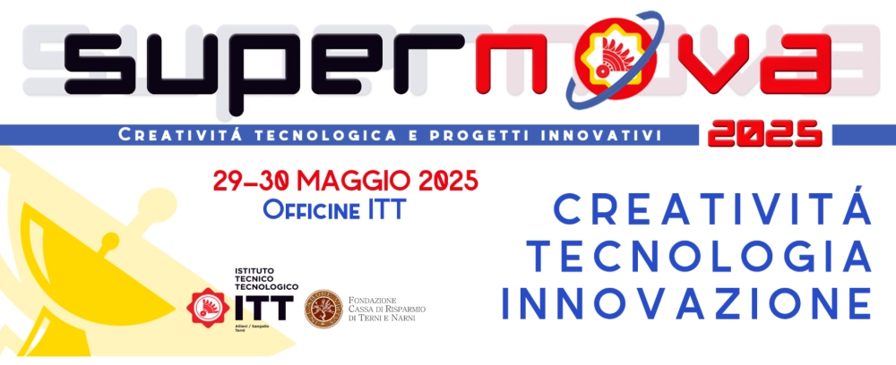
Ally è un dispositivo nato come alleato per i lavoratori videoterminalisti. Esso gestisce l'alternanza tra ore di utilizzo del videoterminale e pause monitorando l'utilizzo del computer. Può inoltre leggere le condizioni dell'ambiente lavorativo come temperatura, umidità, e luminosità per vedere se sono corrette.
Inizialmente questo progetto aveva il nome "Amico 81/08" per sottolineare come si basi sul D.Lgs. 81/2008, il Testo Unico sulla Sicurezza che sancisce anche il regolamento per lavoratori su videoterminale. Poi fu chiamato semplicemente "Ally" come qualcosa di più amichevole e per enfatizzare l'alleanza tra lavoratori, datore di lavoro, e questo dispositivo.
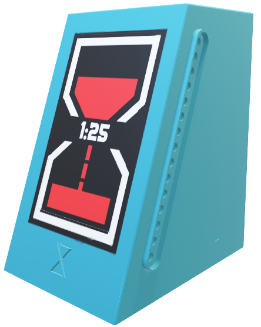
Nella prima fase di Supernova ogni gruppo deve preparare una presentazione da esporre alla giuria, e per essa abbiamo scelto di portare anche un prototipo con un timer. Ci siamo divisi i ruoli e ho scelto di diventare Responsabile dell'Area Software visto le mie capacità informatiche. In questa fase ho sviluppato il codice del software sia per il computer in Python, che legge il suo utilizzo e invia i risultati al dispositivo, sia per il dispositivo Ally con l'IDE di Arduino, che mostra un timer in base all'utilizzo del computer.
Con la nostra presentazione e il prototipo abbiamo ottenuto il risultato migliore, arrivando primi in questa prima fase. Per il nostro risultato abbiamo ricevuto la borsa di studio CARIT con lo scopo di sviluppare ulteriormente questo progetto per farlo diventare un prodotto reale.
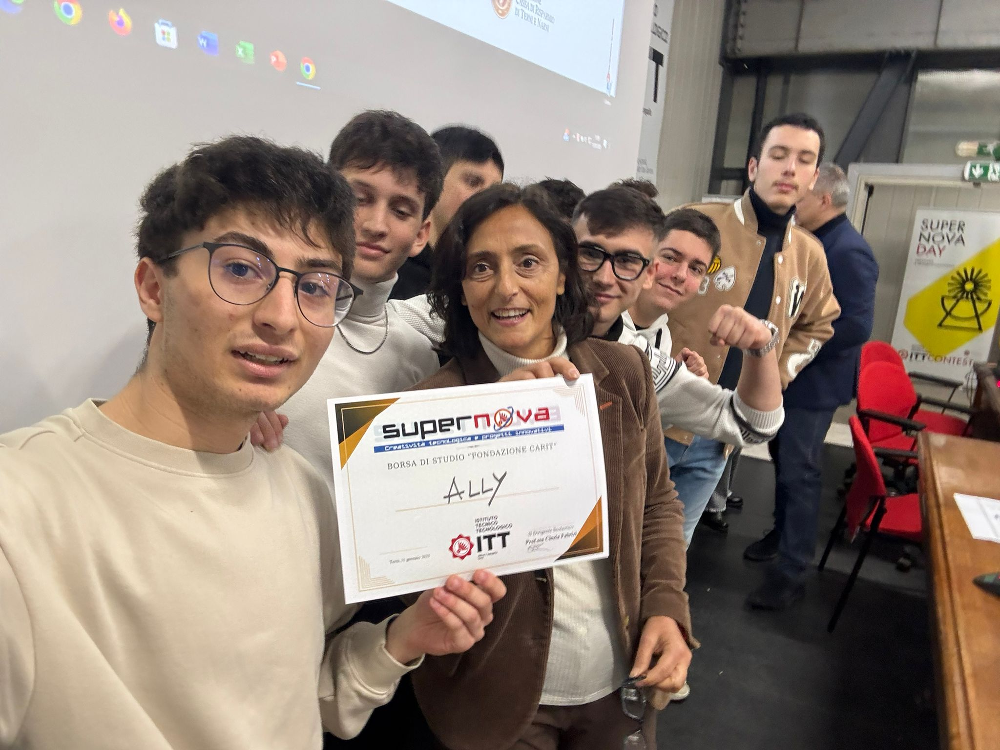
Dopo aver festeggiato il nostro risultato, ci siamo impegnati per sviluppare un'altra versione del nostro prodotto da mostrare durante i Supernova Days, una fiera dove vengono mostrati i progetti Supernova al pubblico. Questa seconda versione, oltre ad avere tutte le funzionalità di quella precedente, ha dei sensori per misurare temperatura, umidità, e luminosità dell'ambiente di lavoro e la possibilità di connetterlo ad un server per mostrare i dati ricevuti in un'interfaccia grafica.
Per questa seconda parte ho continuato a lavorare nell'Area Software, lavorando nella parte back-end sia del client, che lavora nel computer del videoterminalista, e del server, che visualizza i dati ricevuti. Ho inoltre collaborato con il Responsabile dell'Area Comunicazione per sviluppare una migliore animazione della clessidra del dispositivo.
Anche questa seconda versione è andata a buon fine. Abbiamo mostrato questa versione migliorata del nostro progetto insieme al prototipo, ottenendo l'interesse di varie persone inclusi datori di lavoro e perfino del Sindaco di Terni Stefano Bandecchi.
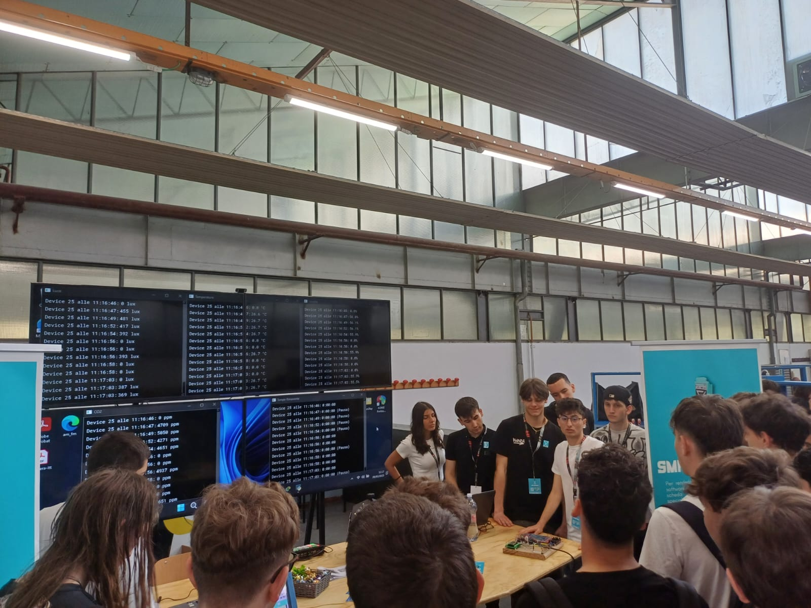
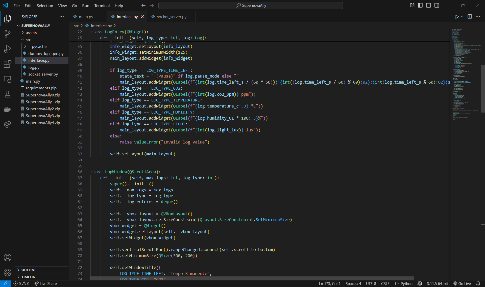
Adesso stiamo cercando insieme al professore Attilio del Pico di brevettare il nostro prodotto e portarlo nella pratica, trovando delle aziende per poterlo testare.
Ringrazio prima di tutto la mia scuola per avermi dato quest'opportunità formativa. Ringrazio inoltre tutti i professori che ci hanno assistito in questo progetto lasciandoci sempre la possibilità di sviluppare le nostre competenze, tra cui Attilio del Pico, Daniela Pimponi, Simone Sebastiani, e Gianluca Raguseo. Infine, ringrazio tutti i compagni con cui ho svolto quest'esperienza.
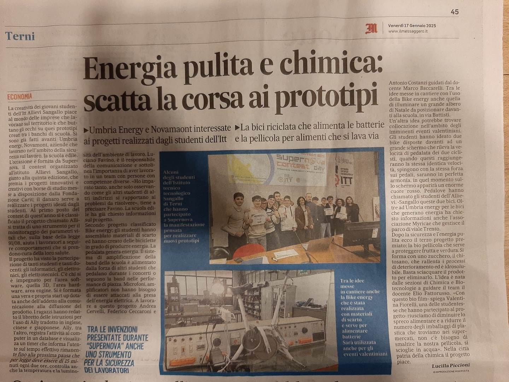
From the 3rd of June to the 2nd of July I participated in the Erasmus Project, an EU program where students live abroad for a period of time and work at internships or study at schools. During this month I stayed in Seville and I am more than willing to have this experience again.
The Erasmus Program is an European Union project which aims to give opportunities to students and organisations from all over the world.
The Erasmus Project allows all european students to stay abroad for one or three months and study or work in an internship while still giving the freedom to explore their city outside of work hours. It started from the ideas of Italian pedagogue Sofia Corradi and has since grown into a large interconnetted community of students, teachers, and organisations. This year I decided to apply to the Erasmus Mobility and I was chosen as the ones to travel to Seville.
This was not just the first time I've truly visited a foreign country, but it was also the first time I had to live pretty much by myself for a long period of time, so it was a one of a kind experience without a doubt. I was a bit anxious at first, and I initally missed my parents during my first week, but in the end I got along with it and I think I am now more than willing to do it again.
After arriving by plane, we took accomodation in our hostel, which gave us free lunch and dinner during workdays. While we were not at work we were free to stay at our room or explore the city with our friends however we liked, which made me appreciate Spanish culture much more than a standard school trip.
During work hours I and my friend Christian worked together at a phone repair shop called "Vive Tu Mòvil", where we assisted the shop owner Rafael by disassembling devices, replacing parts, and finding solutions to clients' problems, sometimes via the use of Internet. We also learned how to disassemble and fix mobile phones and managed to split up our work based on what we can do best.
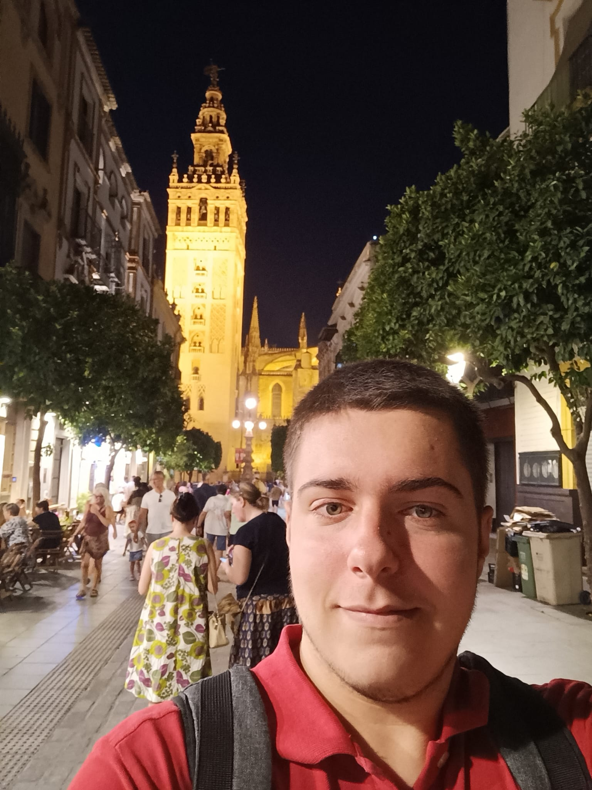
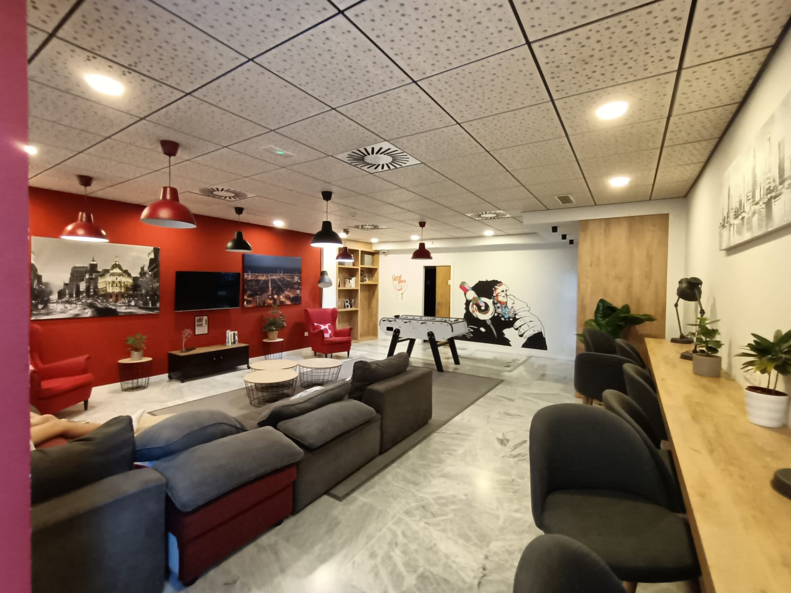
This experience taught me a lot on how to live independently and abroad. I learned how to do chores on my own, to take care of myself for a relatively long period of time, to shop for groceries, and to pass the time without always looking at my phone. I also learned how to orient myself around a city despite the language and cultural barriers.
I only had some fears or worries about this activity, and now I'm glad to have finished this experience as well. I faced this experience with commitment, curiosity, and initiative, always giving the best of myself and asking for clarification whenever I needed them. The staff was always available and kind, and the tutors were always helpful. During this journey I developed both transversal and technical skills, discovering new tools and delving into others already known.
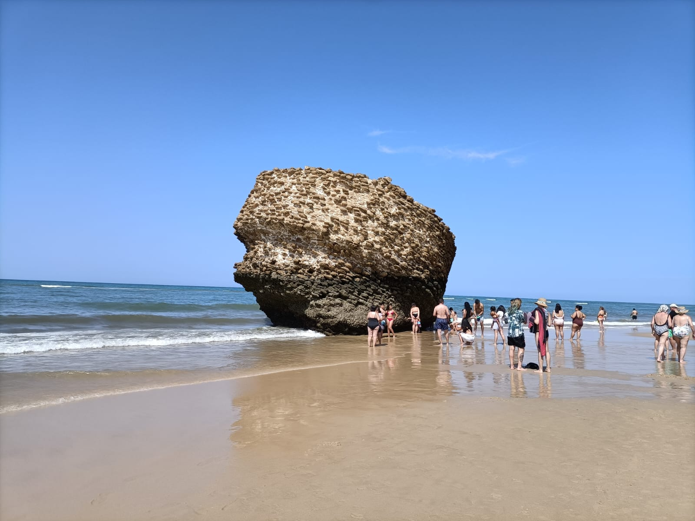
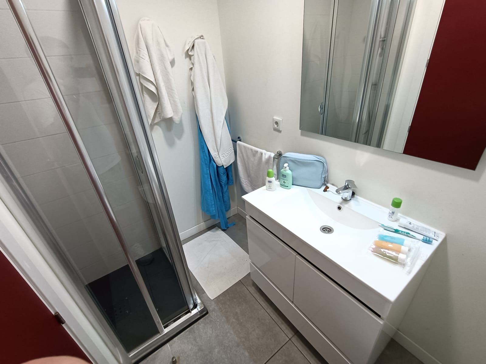
Thanks to:
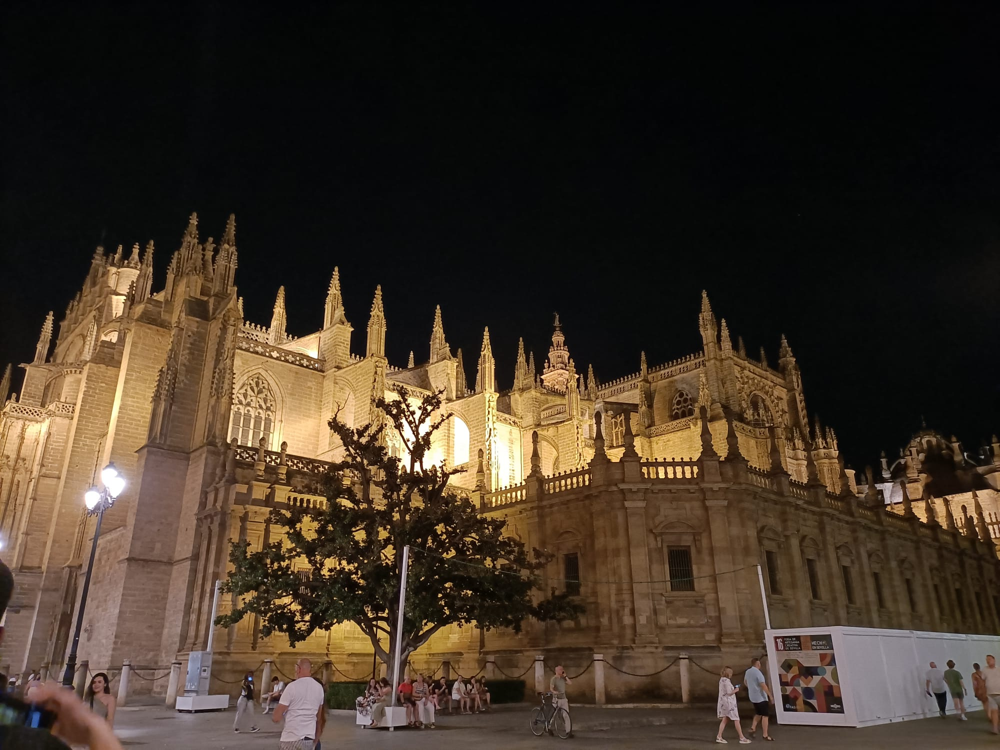